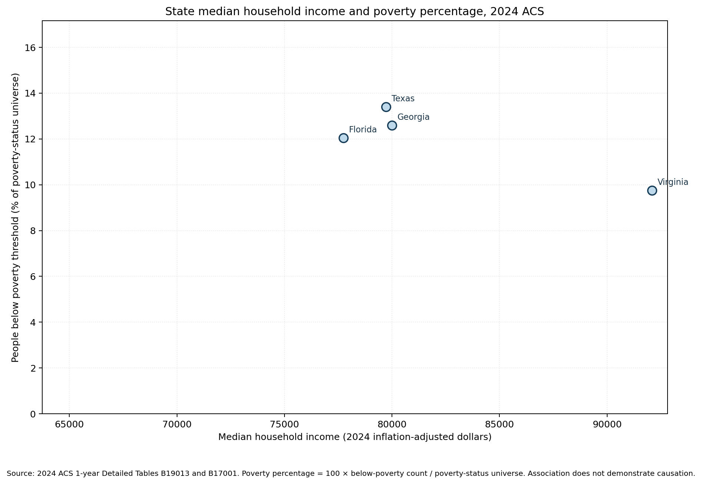

Also known as: scatterplot, scatter graph, scatter chart, scattergram, or scatter diagram. See also: Bubble Chart.
Apply the Census Bureau Statistical Quality Standards, revised September 29, 2026, within their stated scope. The chart-selection advice and implementation checks on this page explain practical design choices; they do not create additional agency mandates. Treat Essential items as the core design conditions for this chart, and confirm formal applicability through the program’s review process.
Coordinate this page with Titles and Subtitles, Legends, Sources, and Visualizing Uncertainty. Keep detailed component guidance in those shared pages rather than duplicating it here.
A scatter plot places one observation at each pair of numerical coordinates (x, y), revealing patterns, clusters, outliers, and possible associations between two quantitative variables. A bubble chart adds a third quantitative variable through proportional circle area. Scatter plots display association, not causation; no fitted line is required.
Use a Bubble Chart when the third quantity materially improves interpretation and can be encoded accurately by marker area. Use a Line Graph for changes over time; a Small Multiples display when group comparisons crowd a single view; and a data table when precise values matter most.
Avoid a single static scatter plot when severe overplotting hides most observations, the sample is too small for a meaningful relationship claim, or variables are categorical rather than quantitative. Consider transparency, faceting, binned counts, or tabular alternatives when appropriate.
| Question | Visualization |
|---|---|
| How do two numeric measures vary together? | Scatter plot |
| Does population size change the interpretation? | Bubble chart, with area-proportional markers |
| How do measurements evolve over ordered time? | Line graph |
| Are subgroup comparisons obscured? | Small multiples or separate charts |
100 × B17001_002E / B17001_001E.B19013_001M and B17001_002M represent
published 90% margins of error for their respective
estimates, not a margin of error for the derived poverty
percentage. Calculate ratio uncertainty using an appropriate
Census-approved method if it is to be displayed or tested.If categories or multiple point series require a key, include a clear legend unless direct labels already identify them unambiguously. Keep the title’s observation unit explicit. Use simple markers, position selective labels so they do not overlap, and use leader lines where needed. Two quantitative coordinates define the scatter plot; additional categories must not obscure that relationship. If a third quantitative value changes marker area, follow the Bubble Chart guidance.
Use these comparisons to connect each design choice with its effect on interpretation.
| Problematic approach | Why it matters | Preferred approach |
|---|---|---|
| Point sizes vary without a named third measure | Readers may infer a quantity that is not encoded | Use equal marker areas for the two-variable scatter plot |
| Poverty count is divided by total population | The denominator differs from the published poverty-status universe | Use B17001_001E for the derived percentage and document the formula |
| A fitted line is described as a causal or nationally representative result | Selected aggregate observations cannot support that conclusion by themselves | Describe the selected-state association and disclose any fitted-line method and limitations |
Test the chart at its intended display size and with enlarged text. Follow the reading sequence from title to explanation, figure, table, and source. Check that labels and meaningful marks remain distinguishable without color and that any controls can be operated by keyboard with visible focus. Read the explanation and table with a screen reader to confirm that they convey the same measures, units, missing-data conditions, and important relationships as the chart.
Use automated and manual accessibility testing together. A downloadable CSV supplies values but does not replace the chart’s explanatory narrative; see USWDS visualization guidance. Record the page/version, tool or assistive technology, result, and corrective action. Apply the sponsor’s agreed accessibility baseline rather than treating a palette simulation as a conformance test.
The following examples are retained from the Census guidance. Their datasets, periods, universes and design lessons remain distinct. Some illustrate limitations or less-preferred choices; inclusion does not certify every design or its accessibility.
Example 1: Percent Labor Force Covered by Public Pensions vs Percent of Former Wages Replaced by Pensions in Select Asian Countries.
In Example 1 we notice the following consistencies with our standards: * The variables and units of analysis are explained in the title of the graph. * Labels are being used for specific observations and the labels do not overlap point markers. * Circles are being used as point markers, which are proportional in height and width. * There is not an excessive number of observations.
Example 2: Median Estimated Earnings by Sex and Occupation

This plot is a good example of the following: * The units of analysis on this dashboard scatter plot are clearly identified as dollars using the dollar signs in front of the axis labels. * The symbol used for each data point is a circle.
Example 3: Uninsured Rate in 2013 and Change from 2013 to 2014 for Occupations

This plot is a good example of the following: * The data is
represented using circles that are shaded in two different colors.
* The colors are defined in a legend on the graph. * Units of analysis
are clearly defined in the axis labels. * All labels do not interfere
with the data points on the graph using leader lines to connect the
label to each data point being identified.
2024 ACS income and poverty by state. B19013 and B17001: use the same x/y definitions as the bubble example with equal marker areas.
What this adds: Demonstrates how a two-variable display differs from the three-variable bubble display without changing x/y meaning.
Run evidence: The supplied November 10, 2026 run generated this example. Saved-data arithmetic and chart layout were reviewed for this package; published-page accessibility testing remains outstanding.

Source and interpretation: U.S. Census Bureau, 2024 ACS 1-Year Estimates, Detailed Tables B19013 and B17001. Poverty percentage = 100 × below-poverty count / poverty-status universe; income is in 2024 dollars. The supplied run completed November 10, 2026 (UTC).
The companion bubble chart has the same x/y values; this chart uses equal marker areas. Published income and poverty-count MOEs are retained in the data table, but no derived percentage MOE is calculated. A pattern across four selected states does not establish causation or a statistically significant relationship.
Selected values (rounded for display; CSV retains exported precision):
| State | Income estimate ($) | Below poverty (%) |
|---|---|---|
| Florida | 77,735 | 12.05 |
| Georgia | 79,991 | 12.59 |
| Texas | 79,721 | 13.41 |
| Virginia | 92,090 | 9.75 |
Read the data tables · Download scatter_plot_data.csv
Implementation: Python source. The original illustrations above and the ACS output have separate asset paths and source statements.
Use the original illustrations to discuss design choices and their source-specific limitations. Use the ACS addition to demonstrate a documented data-to-chart workflow. Do not combine values across examples, imply that they use one dataset, or relabel a historical image as a new ACS output.
The following contract defines the intended behavior of the linked examples. Confirm the files, commands, dependencies, and generated results against the repository before publication.
Inputs: 2024 ACS 1-Year B19013 and B17001 records joined by state identifier, with income estimate/MOE, poverty count/MOE, poverty-status universe, and annotations.
Require one x–y pair per included state. Derive poverty percentage as 100 × B17001_002E / B17001_001E only for a valid positive universe. Check the count is between zero and its universe, join cardinality is one-to-one, and both measures use the same release and geography. Document excluded states and retain published MOEs.
Use the supplied
Python implementation and the ACS example
runner. The runner maps this page to job scatter_plot.
Its dependencies are listed in requirements.txt.
Confirm supported input options in the implementation and its
accompanying README.
The executed notebook contains saved outputs from the supplied ACS run. The run status CSV records generated results. The notebook produces the ACS additions; it does not recreate the historical Census illustrations.
The analytical definitions and output checks on this page also specify the requirements for an R counterpart. A verified R implementation is not bundled in this combined package. Retain R execution and Python/R agreement as outstanding validation tasks; do not describe them as completed.
A personal Census API key is required for data queries under the current
Census API guidance. Read CENSUS_API_KEY from the
analyst’s environment. Do not include keys in source control, saved
notebooks, request logs, error messages, or execution manifests; redact
the key query parameter wherever a request URL is recorded.
No shared developer credential or private file path should be
required.
For each run, save the validated data, chart PNG/SVG, a semantic HTML table, descriptive-text draft, and a nonsecret manifest in the selected output folder. Include source table/variables, full reference period, geography, units, transformations, exclusions, dependency versions, and retrieval time. Pin or record versions actually tested. For identical inputs, R and Python should reproduce the same analytical values within an explicitly documented tolerance; visual styling need not be pixel-identical.
When changing years or geographies, recheck product coverage, definitions, annotations, and comparability. A successful run does not establish statistical significance or accessibility conformance.
| Check | Expected evidence |
|---|---|
| Point count | Number of plotted points equals the number of valid, unique joined states; each state has one recorded x–y pair |
| Coordinates | X equals the income estimate and Y equals the documented poverty percentage; marker area is constant |
| Uncertainty | Published poverty-count MOE remains labeled as a count MOE; no uncalculated percentage MOE or fitted-model inference is reported |
Source-statement pattern for this example: U.S. Census Bureau, American Community Survey, 2024 ACS 1-Year Estimates, Detailed Tables B19013 and B17001, selected states. Poverty percentages calculated from B17001 estimates; income is in 2024 inflation-adjusted dollars. Add the specific source or reproducible request link and actual retrieval date; omit the API key. Identify derived calculations separately from published estimates.
| Error | Correction |
|---|---|
| Treating association as causation | State the graph is descriptive; avoid causal claims |
| Using total population to calculate poverty percentage | Divide by the B17001 poverty-status universe |
| Claiming numerator MOE is the derived percentage MOE | Use a suitable ratio-MOE method or omit a percentage MOE |
| Overlapping every point label | Label selectively and provide an accompanying table |
| Displaying suppressed ACS values as actual numbers | Filter and document invalid or suppressed observations |
| Using bubble-size encoding unintentionally | Keep point areas equal for a two-variable scatter plot |
Related pages: Bubble Chart, Line Graph, and Visualizing Uncertainty.
The original Census page and its example assets are preserved in this package; see the review record for the exact baseline and changes.
Use the September 29, 2026 consolidated Census Statistical Quality Standards, especially E1-6 (replication documentation), E2-2.3 (visualization requirements), and E3-2.4 (visualization review). Retain review findings and corrections separately from the design checklist.